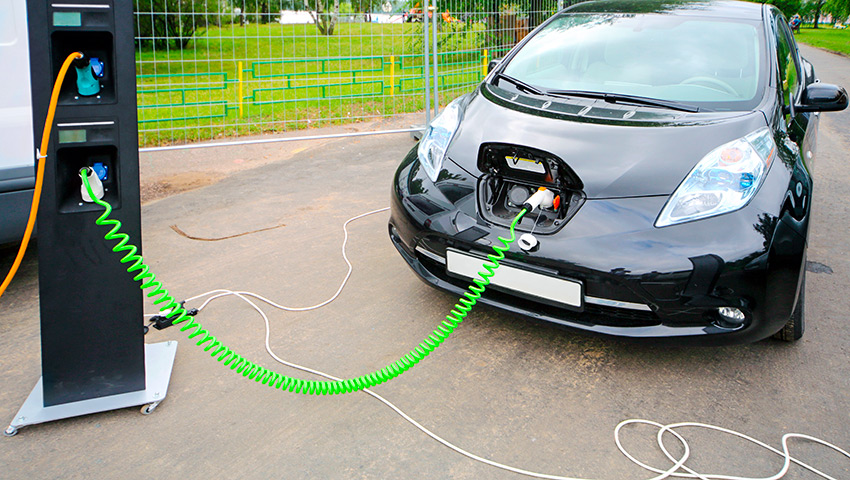

Зима и холода – не самые лучшие друзья для электромобилей. Украинские реалии заставляют водителей 3-4 месяца терпеть неудобства, связанные с холодами: низкая температура, заснеженные и часто обледенелые дороги. И если автомобилисты на авто с ДВС уже как-то приспособились к таким условиям, то владельцам Nissan Leaf, Tesla Modes S, Fiat 500e или BMW i3 еще придется учиться премудростям эксплуатации электромобилей зимой, где главной проблемой является повышенная потеря заряда аккумуляторных батарей.
Даже при не самой суровой зиме, норма потери заряда батарей при низкой температуре, составляет 30-40% от общего объема. Однако, такие высокие показатели касаются, в первую очередь, неопытных и неподготовленных владельцев электрокаров, которые не знакомы, либо еще не научились специфике езды на подобных машинах в зимних условиях.
В этой статье мы раскроем несколько полезных советов, которые помогут владельцам электромобилей сберечь как можно больше энергии в батареях, а значить, увеличить максимальный пробег.
1. Хранение автомобиля в гараже.
Самым проверенным способом сохранения заряда АКБ в электромобилях в зимний период времени – это гаражное хранения. Даже не в самом теплом гараже, температура воздуха на несколько градусов выше, что позитивно сказывается на сохранение энергии в АКБ, а также позволяет быстрее прогреть аккумулятор. Самым лучшим вариантом, естественно, является отапливаемых гараж, который не только сохранит заряд батареи, но и повысит скорость подзярядки, что позволит сэкономить на расходе электричества и продлит «жизнь» АКБ.
2. Электромобиль зимой нужно постоянно подзаряжать.
В холодное время года электромобиль не только теряет в запасе хода, но и дольше заряжается. Поэтому, при любой возможности, подзаряжайте автомобиль в перерывах между ездой. Даже если индикатор будет показывать полный заряд, не отключайте машину от сети питания.
3. Дистанционная связь с авто должна быть постоянной.
Современные электромобили имеют функцию дистанционного управления при помощи специальных мобильных приложений. Эта функция доступна в средней и топовой комплектации Nissan Leaf, а также является базовой для Tesla Model S. При помощи телефона вы можете принудительно задать обогрев салона, что позволит сесть в уже прогретую машину, с нагретой АКБ. Хорошо, если в этот момент машина подключена к сети, это позволит не потерять полный заряд батареи.
4. Используйте рекуперацию энергии.
Фрикционное торможение – это дополнительная потеря заряда АКБ, поэтому зимой старайтесь использовать функцию рекуперации энергии, когда автомобиль замедляет движение, не прибегая к фрикционным тормозам. Это позволит вам пополнять заряд батареи, а также увеличит запас хода электромобиля на 10-15%.
5. Нагревайте аккумуляторные батареи.
Практически на всех электромобилях сейчас используются литий-ионные батареи, которые достаточно чувствительны к холодам и не «дружат» с минусом. Это заставило автопроизводителей позаботиться о функции нагрева АКБ, чтобы сохранить нормальный баланс работы батареи. Использовать данную функцию нужно постоянно перед тем, как поехать на машине после длительного простоя.
6. Рационально используйте климат-контроль и обогревы.
Если вам все же приходится оставлять автомобиль на морозе, то разумным будет рационально использовать климатическую систему в машине. Это касается не только климат-контроля/кондиционера, но и систем обогрева сидений, руля и т.д. По возможности, обходитесь без обогрева рулевого колеса, либо сидений, так как на обогрев локальных зон уходит очень много энергии, что, естественно, значительно сокращает длительность пробега.
7. Используйте эко-режимы.
Как правило, эко-режимы в электромобилях – это системы, позволяющие экономить запас заряда. Зимой необходимо ехать как можно медленнее, что не только безопаснее, но и менее затратно с точки зрения запаса энергии. Быстрая езда зимой на электромобиле не только опасна (как и на любом другом авто), но и расточительна.
8. Следите за резиной и давлением в шинах, снимите навесное оборудование.
Следить за состоянием резины и давлением в шинах – это общие рекомендации для всех электромобилях. Перед наступлением холодов очень важно проверить развал схождения, состояние резины (глубина протектора) и т.д. Недостаточное давление повышает сопротивление качению, что сказывает на пробеге намного больше, чем может казаться, кроме этого, глубина протектора также играет значительную роль в этом случае.
Навесное оборудование также будет лишним при езде зимой. Помимо сильного ветра, который часто бывает зимой, такая вещь как багажник на крыше, будет еще больше оказывать сопротивление воздушных потоков, а значить тормозить автомобиль, который, в свою очередь, будет тратить больше энергии АКБ на движения.
9. Замените жидкости.
Если вы решили купить электромобиль из США и он приплыл в Украину из «теплых» Штатов, обязательно перед зимой замените жидкости в коробке, тормозной системе, системе кондиционирования и т.д. Не лишним будет заменить уплотнители, а также различные фильтра. Жидкости, которые используются в машинах, эксплуатируемых в условиях преимущественно с высокой плюсовой температурой, просто не предназначены для использования в наших экстремальных холодных широтах, поэтому, замена их жизненно необходима для авто.
Итоги.
Все вышеперечисленные рекомендации конечно же не защитят вас от дополнительных потерь заряда АКБ зимой, однако они в значительной мере позволят сократить потери энергии. Помните, что порой самые незначительные поступки, могут сыграть положительную роль в том, что вы не только больше проедите на одном заряде зимой, но и позволят сэкономить при заряде батарей.
По материалам сайта: http://atlanticexpress.com.ua/kak-pravilno-ezdit-na-jelektromobiljah-zimoj-9-pravil-kotorye-pomogut-vam-sberech-kak-mozhno-bolshe-jenergii-v-batarejah/